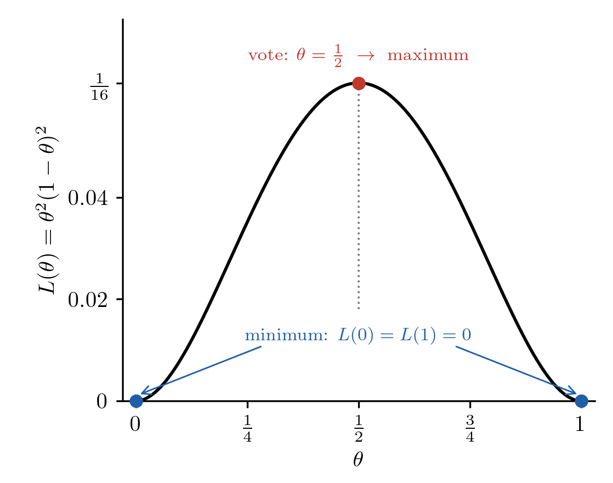

05wk-1: 통계와 수학공부를 잘 하는 법
1. 강의영상
2. 이인석, 『선형대수와 군』, 머리말
A. 추상 對(대) 직관
[抽象的(추상적)인 언어의 훈련]과 [直觀的(직관적)이고 구체적인 상황에서의 대응 훈련]이라는 상충된 입장의 교육 방법에 관해서는 동료들과도 많은 토론과 논쟁이 있어 왔다. 어느 쪽이 절대적으로 좋은 방법이라고 結論(결론)을 내릴 수는 없으나, 저자는 비교적 추상적인 언어 쪽에 기우는 입장이었다.
그러나 통년과목 선형대수학의 경우에는 논쟁이 있을 수 없다. 一年(일년) 내내 직관적인 상황만 이야기하는 것은 불가능하기 때문이다. 따라서 抽象化(추상화) 훈련의 시작은 불가피해 보인다. (그러나, 직관적인 대응 훈련이 마치 봄 소풍을 떠나는 기분인 데 反(반)하여, 추상적 언어 훈련의 시작은 어쩐지 지옥훈련을 떠나는 느낌인 것은 감출 수가 없다.)
저자는 창의성 교육이라는 단어를 좋아하지 않는다. 내게 창의성이 있다는 생각은 남들은 모두 나보다 못하다는 생각과 동치이다. 앞 시대를 살다 간 수많은 天才(천재)들의 業績(업적)을 이해하려 하지 않고 창의성만을 기대하는 사람을 우리는 ’아마추어’라고 부른다. ’프로’는 먼저 수많은 천재들의 업적을 이해하려고 노력한다. 창의성은 그 다음의 문제이다. 그리고, 수많았던 천재들의 업적을 一二年(일이년)에 이해할 수 없음은 말할 필요도 없다. 창의성 교육을 원하는 수강생들은 이 강의를 수강할 필요가 없다.
B. 증명에 관해서
이 책의 증명은 두 부분으로 나뉘어져 있다. 그 첫 번째는 우리 ’story’의 一部(일부)이고, 두 번째는 ’기계’가 맡는 부분이다. 독자들이 이 책의 ’story’에 빠지게 되면, ’증명의 줄거리’도 기억할 수 있을 것이다.
그리고 ’기계’가 맡는 부분은 독자들 스스로 ’기계’가 되어 훈련하여야 한다.[^9] 독자들은 연필과 종이만 있으면 언제든지 이 책의 명제들을 혼자 힘으로 증명할 수 있다는 확신이 설 때까지 훈련하여야 한다.
증명의 ’기계’가 맡는 부분에 가끔 [연습장]이 등장하는데, 이는 ’기계’들이 왜 그렇게 증명할 수밖에 없는지를 설명해 준다. [연습장]이라는 말이 나오면, 독자들도 각자의 연습장을 꺼내기 바란다.
3. 의미로 풀기 vs 수학기계가 풀기
# 예제1 – 현실세계와 수학적세계
최규빈은 수업하면서 이동하는 버릇이 있다. 오늘도 수업하면서 이동했다고 한다. 왼쪽으로 5칸, 오른쪽으로 4칸, 왼쪽으로 6칸, 오른쪽으로 5칸, 왼쪽으로 3칸, 왼쪽으로 4칸, 다시 오른쪽으로 6칸 갔다고 할 때, 최규빈은 처음 위치에서 어느 쪽으로 몇 칸 떨어진 곳에 있는가?
# 예제2 – 등차수열의 합
\(1+3+5+7+9+11\) 의 합은? 그렇다면 \(1+3+5+7+9+11+13+15\) 의 합은?
# 예제3 – 폰노이만
200km 떨어진 두 자동차가 서로를 향해 각각 시속 50km로 달리기 시작했다. 같은 순간 파리 한 마리가 한쪽 자동차에서 출발해 시속 75km로 날아가, 맞은편 자동차에 닿으면 곧바로 방향을 바꿔 되돌아오기를 되풀이한다. 두 자동차가 만날 때까지 파리가 날아간 거리는 모두 몇 km인가?
(풀이) – AI가 썼음
두 자동차 사이의 거리가 \(d\)일 때 파리가 출발했다고 하자. 파리와 맞은편 자동차는 서로 마주 오므로, 파리가 맞은편 자동차에 닿기까지 걸리는 시간은
\[\frac{d}{75+50} = \frac{d}{125}\]
이다. 이 시간 동안
- 파리가 날아간 거리: \(75 \times \frac{d}{125} = \frac{3}{5}d\)
- 두 자동차가 가까워진 거리: \((50+50) \times \frac{d}{125} = \frac{4}{5}d\) \(\Rightarrow\) 남은 거리는 \(\frac{1}{5}d\)
즉 파리가 한 번 날 때마다 두 자동차 사이의 거리는 \(\frac{1}{5}\)배로 줄고, 파리는 그때의 거리의 \(\frac{3}{5}\)만큼 난다.
| 구간 | 출발할 때 두 자동차 사이의 거리 | 파리가 날아간 거리 |
|---|---|---|
| 1 | \(200\) | \(120\) |
| 2 | \(40\) | \(24\) |
| 3 | \(8\) | \(4.8\) |
| \(\vdots\) | \(\vdots\) | \(\vdots\) |
따라서 파리가 날아간 거리는 첫째항이 \(120\), 공비가 \(\frac{1}{5}\)인 무한등비급수이다.
\[120 + 24 + 4.8 + \cdots = \frac{120}{1-\frac{1}{5}} = 150 \text{ (km)}\]
#
4. 의미를 만들어서 기억을 쉽게하기
# 예제4
아래의 함수를 최대로 하는 \(\theta\)값을 \(\theta \in [0,1]\)의 범위에서 구하라.
\[L(\theta)=\theta(1-\theta)\]
(풀이1)
이차함수의 최소값문제네요?? –> AI에게 물어보기
[AI의 답변]
전개하여 완전제곱식으로 바꾸면
\[L(\theta) = \theta - \theta^2 = -\left(\theta-\frac{1}{2}\right)^2 + \frac{1}{4}\]
이다. \(\left(\theta-\frac{1}{2}\right)^2 \geq 0\) 이므로 \(L(\theta) \leq \frac{1}{4}\) 이고, 등호는 \(\theta=\frac{1}{2}\) 일 때 성립한다. \(\theta=\frac{1}{2}\) 은 \([0,1]\) 안에 있다.
따라서 \(L(\theta)\)를 최대로 하는 \(\theta\)값은 \(\theta=\frac{1}{2}\) 이다. (이때 최댓값은 \(\frac{1}{4}\))
(풀이2) – 최규빈식 (엉터리?) 풀이
\(L(\theta)\)는 \(\theta\)와 \(1-\theta\), 두 개의 항으로 쪼갤 수 있어요. \(\theta\) 입장에서는 \(1\)에서 최대화되고 싶어 하고, \(1-\theta\) 입장에서는 \(0\)에서 최대화되고 싶어 하거든요. 그래서 투표해서 \(\frac{1}{2}\)이에요.
#
# 예제5 – 예제4의 응용
아래의 함수를 최대로 하는 \(\theta\)값을 \(\theta \in [0,1]\)의 범위에서 구하라.
\[L(\theta)=\theta^2(1-\theta)^2\]
(풀이1) – AI작성
괄호 안을 먼저 완전제곱식으로 바꾸면
\[L(\theta) = \big(\theta(1-\theta)\big)^2 = \left(\theta-\theta^2\right)^2 = \left\{\frac{1}{4} - \left(\theta-\frac{1}{2}\right)^2\right\}^2\]
이다. \(\theta \in [0,1]\) 이면 \(0 \leq \left(\theta-\frac{1}{2}\right)^2 \leq \frac{1}{4}\) 이므로 중괄호 안은
\[0 \leq \frac{1}{4} - \left(\theta-\frac{1}{2}\right)^2 \leq \frac{1}{4}\]
이다. 중괄호 안이 \(0\) 이상이므로, 중괄호 안이 클수록 \(L(\theta)\)도 크다. 중괄호 안이 가장 큰 것은 \(\left(\theta-\frac{1}{2}\right)^2=0\), 즉 \(\theta=\frac{1}{2}\) 일 때이다.
따라서 \(L(\theta)\)를 최대로 하는 \(\theta\)값은 \(\theta=\frac{1}{2}\) 이다. (이때 최댓값은 \(\left(\frac{1}{4}\right)^2=\frac{1}{16}\))
#
# 예제6
아래의 함수를 최소로 하는 \(\theta\)값을 \(\theta \in [0,1]\)의 범위에서 구하라.
\[L(\theta)=\theta^2(1-\theta)^2\]
(풀이2?)
두명은 0이었으면 하고 두명은 1이었으면 하니까.. \(\frac{1}{2}\)로 투표한다?
(뭔가 이상한데?) – 그래프를 그려보자.

#
# 정리
\(L(\theta)= \theta^a(1-\theta)^b\) 꼴일때 이 함수의 최대값을 \(\theta \in [0,1]\)의 범위에서 구하면 항상 아래와 같이 된다.
\[\frac{a}{a+b}\]
(증명)
[AI의 답변] (\(a,b>0\) 이라고 하자.)
양 끝에서는 \(L(0)=L(1)=0\) 이고, \(0<\theta<1\) 에서는 \(L(\theta)>0\) 이므로 최대는 \(0<\theta<1\) 안에서 생긴다. 이 범위에서 로그를 취하면
\[\ell(\theta) = \log L(\theta) = a\log\theta + b\log(1-\theta)\]
이다. \(\log\)는 증가함수이므로 \(\ell\)을 최대로 하는 \(\theta\)와 \(L\)을 최대로 하는 \(\theta\)는 같다. 미분하면
\[\ell'(\theta) = \frac{a}{\theta} - \frac{b}{1-\theta} = \frac{a(1-\theta) - b\theta}{\theta(1-\theta)} = \frac{a - (a+b)\theta}{\theta(1-\theta)}\]
이다. 분모는 양수이므로 \(\ell'(\theta)\)의 부호는 분자 \(a-(a+b)\theta\)의 부호와 같다. 따라서
- \(0<\theta<\frac{a}{a+b}\) 이면 \(\ell'(\theta)>0\) (\(\ell\) 증가)
- \(\frac{a}{a+b}<\theta<1\) 이면 \(\ell'(\theta)<0\) (\(\ell\) 감소)
이고, \(\ell\)은 \(\theta=\frac{a}{a+b}\)에서 최대가 된다. \(\frac{a}{a+b}\)는 \(0\)과 \(1\) 사이에 있으므로, \(L(\theta)\)를 \([0,1]\)에서 최대로 하는 \(\theta\)값은
\[\theta = \frac{a}{a+b}\]
이다. \(\square\)
#